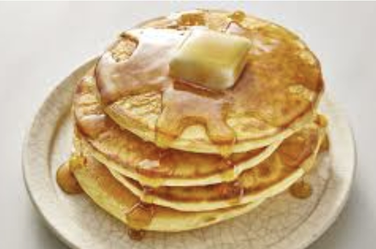

Fluffy Pancakes Recipe

Description
These fluffy pancakes are light, airy, and perfect for a weekend brunch. They’re easy to make and can be topped with your favorite fruits, syrups, or even whipped cream!
Whether you're serving them plain or loaded with toppings, these pancakes are guaranteed to bring smiles to the breakfast table.
Ingredients
- 1 1/2 cups all-purpose flour
- 3 1/2 teaspoons baking powder
- 1 tablespoon sugar
- 1 1/4 cups milk
- 1 egg
- 3 tablespoons melted butter
- Pinch of salt
Instructions
- In a bowl, mix flour, baking powder, sugar, and salt.
- In another bowl, whisk milk, egg, and melted butter.
- Combine wet and dry ingredients until smooth.
- Heat a pan over medium heat and pour batter to form pancakes.
- Cook until bubbles form, flip, and cook until golden.
- Serve warm with syrup or toppings of your choice!
Back to Home